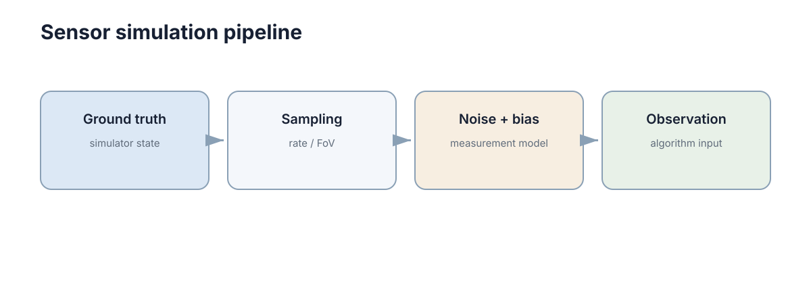

Robot & Sensor Simulation
机器人仿真不仅要让刚体会运动，还要让软件看到与实机相似的传感器接口。只有这样，定位、规划和控制代码才能在仿真与实机之间尽量少改动。

判断仿真质量的标准不是画面是否逼真，而是下游代码在仿真与实机之间需要改多少行。这个标准把“传感器仿真”从渲染问题变成了接口问题：接口对了，仿真即便画质粗糙也可以用来验证算法；接口错了，再漂亮的渲染也只能验证一个不存在的机器人。
机器人本体模型至少要包含可运动结构
移动机器人需要底盘尺寸、轮子位置、关节约束和执行器接口；机械臂需要连杆、关节和限位。碰撞几何可以比视觉模型更简单，只要能正确近似实际碰撞范围。仿真模型的目标是支撑算法，不是做 CAD 展示。
先把变量定义清楚：\(r\) 为轮半径、\(b\) 为轮距、\(\omega_L,\omega_R\) 为左右轮角速度、\(\theta\) 为航向角、\((x,y)\) 为底盘中心位置。差速底盘的运动学为
这三个式子说明了本体模型的最低要求：\(r\) 与 \(b\) 必须存在，单位必须一致，且轮速接口要与实机同量纲。若 \(r\) 有 \(1\%\) 的标定误差，直行 \(100\) m 会产生约 \(1\) m 的里程计偏差，这个偏差与作用距离成正比，无法靠滤波消除。
轮距误差的影响集中在转向：若 \(b\) 低估 \(3\%\)，原地旋转 \(5\) 圈（\(10\pi\) rad）后航向偏差约 \(\Delta\theta \approx 0.03 \times 10\pi \approx 0.94\) rad，即约 \(54^\circ\)。这类误差在短距离任务中不可见，在长距离或多次掉头任务中会直接导致建图错位。
| 仿真用途 | 需要的模型精度 | 不需要的部分 |
|---|---|---|
| 运动学验证 | 轮距、轮径、关节限位 | 外壳细节、材质 |
| 动力学验证 | 质量分布、惯量、摩擦 | 线束、装饰件 |
| 碰撞检测 | 凸包近似几何 | 曲面细分 |
| 视觉渲染 | 外观与纹理 | 精确惯量 |
把用途与精度对齐，可以避免在无关维度上浪费建模时间，也避免用简化模型得出关于动力学的错误结论。下表是本体模型的最小参数清单：
| 参数 | 符号 | 典型量级 | 缺失后的后果 |
|---|---|---|---|
| 轮半径 | \(r\) | 0.05–0.15 m | 里程计尺度偏差 |
| 轮距 / 轴距 | \(b\) | 0.2–0.6 m | 转向角速度偏差 |
| 关节限位 | \(q_{\min}, q_{\max}\) | 依机构而定 | 规划出不可达位姿 |
| 质量与惯量 | \(m, I\) | 5–100 kg | 加速度响应错误 |
| 摩擦下界 | \(\mu\) | 0.4–0.9 | 制动距离被低估 |
| 执行器接口 | 命令 / 反馈 | 频率与量纲 | 控制器无法复用 |
理想传感器只能用于最早期验证
理想 LiDAR 每个测距都精确、IMU 没有偏置、相机没有曝光问题，这种环境适合先验证算法逻辑，但不能代表实机难度。真实传感器至少存在随机噪声、固定偏置、量化、采样频率和延迟。
以 LiDAR 为例：设角分辨率为 \(\Delta\phi\)、距离为 \(d\)、单束测距噪声标准差为 \(\sigma\)。相邻两束激光打在平面上的弧长间隔约为 \(s \approx d\,\Delta\phi\)，由噪声导致的平面法向不确定度近似为
取 \(d = 5\) m、\(\Delta\phi = 0.5^\circ\)，则 \(s \approx 0.044\) m；若 \(\sigma = 0.02\) m，则 \(\eta \approx \arctan(0.45) \approx 24^\circ\)。也就是说，理想模型下“平面拟合精度极高”的结论，在实机噪声下会退化成二十几度的法向误差，而后者会直接影响可通行区域判断。
| 传感器 | 理想模型假设 | 实机实际 | 理想模型会掩盖的问题 |
|---|---|---|---|
| 相机 | 无噪声、无畸变 | 噪声、畸变、曝光、滚动快门 | 特征匹配稳定性 |
| LiDAR | 单束测距精确 | 约 2 cm 噪声、反射率依赖 | 平面与法向估计误差 |
| IMU | 无零偏、无尺度误差 | 零偏、尺度因子、温漂 | 二次积分漂移 |
| GNSS | 直接给出真值 | 多径、跳变、坐标系偏移 | 数值越界与跳变处理 |
| 编码器 | 计数精确 | 量化、丢脉冲 | 低速段的估计噪声 |
理想环境仍然有价值：它把“算法逻辑错”和“参数与噪声问题”分开。正确的顺序是先在理想环境确认逻辑，再逐层加入真实误差；反过来做，噪声会掩盖逻辑错误，让人误以为算法框架本身有问题。
理想传感器还有一个隐性代价：它让参数估计问题消失。当数据无噪声时，任何最小二乘问题的解都是精确的，标定与外参估计都“一次成功”；实机上场后，同样的代码会因条件数变差而给出漂移的解。仿真应主动制造条件数更差的几何布置——近共面点、短基线、重复结构——用来检查估计器的数值稳定性。
另一个容易忽略的差别是“缺数据”：理想环境里每个传感器永远有数据，而实机上遮挡、无纹理、强反光都会让某些帧缺少有效观测。若仿真从不让观测缺失，融合模块就不会实现缺失分支，实机第一次出现空洞时往往会用错误的历史值填坑。
因此传感器仿真有一条经验顺序：先验证逻辑，再验证数值稳定性，再验证缺失与异常，最后才比较性能上限。跳过中间两步直接做性能对比，得到的结论通常无法迁移到实机。
噪声、偏置和延迟是三种不同误差
白噪声每次随机变化；bias 会长期把测量推向一个方向；latency 则让数据到达时已经过时。三者对算法的影响不同，用测量模型可以写清区别，其中 \(z_k\) 为第 \(k\) 次测量、\(x_k\) 为真值、\(b_k\) 为偏置、\(n_k\) 为零均值白噪声、\(w_k\) 为偏置的随机游走增量、\(\tau\) 为延迟：
import numpy as np
def simulate_imu(true_acc, stamp, bias=0.03, sigma=0.02):
noise = np.random.normal(0.0, sigma, size=3)
return {"stamp": stamp,
"frame_id": "imu_link",
"linear_acceleration": np.asarray(true_acc) + bias + noise}
三者对下游的影响量级完全不同。以加速度计为例取 \(b = 0.03\) m/s\(^2\)、\(\sigma = 0.02\) m/s\(^2\)、采样率 \(f_s = 100\) Hz：白噪声在 \(1\) s 平均后的残余约为 \(\sigma/\sqrt{f_s} \approx 0.002\) m/s\(^2\)，而偏置不会随平均消失；对加速度偏置做一次积分得到速度偏差 \(b\,t\)，二次积分得到位置偏差 \(\frac{1}{2} b t^2\)。当 \(t = 10\) s 时位置偏差约 \(1.5\) m。
| 误差 | 统计特性 | 滤波能否消除 | 补偿方式 | 典型量级 |
|---|---|---|---|---|
| 白噪声 \(n_k\) | 零均值、无记忆 | 能（降方差） | 低通 / 卡尔曼 | \(\sigma = 0.02\) m/s\(^2\) |
| 偏置 \(b_k\) | 慢变随机游走 | 需显式建模 | 标定 + 偏置状态 | \(0.01\)–\(0.05\) m/s\(^2\) |
| 延迟 \(\tau\) | 确定性但未知 | 不能 | 时间戳 + 外推 | \(20\)–\(100\) ms |
| 量化 | 均匀分布 | 部分 | 提高分辨率 | \(1\)–\(10\) 倍最小刻度 |
| 缩放误差 | 乘性 | 不能 | 尺度标定 | \(0.5\%\)–\(2\%\) |
滤波可以减弱随机噪声，却不会自动修正未知固定 bias；延迟则会直接影响融合与控制的相位。让仿真接口同时输出测量值、时间戳和坐标系，下游模块才可能真正依赖正确的语义，而不是依赖“数据永远准时且对齐”这一隐含假设。
传感器模型的误差分层
把误差按“叠加顺序”分层，可以让仿真逐步增加难度，也让失败时容易定位是哪一层的问题。记第 \(i\) 层的噪声方差为 \(\sigma_i^2\)、确定性偏差为 \(b_i\)，则多源合成的总体误差满足
第一条说明随机误差按方差相加，第二条说明确定性偏差按绝对值相加：偏置的叠加速度远快于噪声，这也是“只加高斯噪声”的仿真会系统性低估实机难度的原因。
| 层级 | 加入什么 | 验证目标 | 典型实验 |
|---|---|---|---|
| 理想 | 真值直接输出 | 算法逻辑是否正确 | 单元测试、算法对比 |
| 噪声层 | 高斯 / 泊松噪声 | 滤波是否有效 | 静态数据估计 \(R\) |
| 偏置层 | 固定与慢变偏差 | 标定与偏差估计 | 长时间静止与匀速段 |
| 延迟层 | 采样与传输延迟 | 时间同步与相位 | 阶跃响应对比 |
| 失效层 | 遮挡、饱和、丢帧、冻结 | 异常处理与降级 | 故障注入演练 |
实践中最常见的错误是只做噪声层：加高斯噪声后滤波效果看起来很好，但实机上因为偏置未标定、延迟未补偿而失效。三层以上必须一起做，否则仿真提供的信心是虚高的。
分层的另一好处是可以做误差归因实验：固定其他层，只放大某一层，观察任务指标的变化率 \(\partial J / \partial \sigma_i\)。若某层的敏感度远高于其他层，仿真投入就应该优先花在那里，而不是平均分配。
分层还决定了参数标定的顺序：先标定确定性偏差（偏置、尺度、外参），再估计随机噪声，最后处理时序（延迟与时钟）。顺序颠倒会互相污染——用未标定的数据估计噪声方差，会把偏置误算成噪声，得到偏大的噪声矩阵，进而让滤波器过度信任模型。
各层的典型影响量级可以汇总成一个粗略预算：噪声层贡献约 1–3 cm 的位置不确定性，偏置层在 10 s 内可贡献 0.5–2 m，延迟层在 2 m/s 下贡献 4–20 cm，失效层则可能直接造成米级跳变。因此长时任务的主要威胁是偏置与失效，而不是噪声。
最后，分层实验必须记录“哪一层被打开”这一元信息。若一份日志是在噪声层和失效层同时打开的情况下采集的，事后就无法判断某个跳变究竟来自哪一层，归因实验也就失效了。
相机 / LiDAR / IMU / GNSS 的仿真实现
不同传感器的仿真原理和可信度差别很大。LiDAR 的核心运算是射线与几何求交：设射线起点 \(\mathbf{o}\)、方向 \(\mathbf{d}\)、平面上的点 \(\mathbf{p}_i\) 与法向 \(\mathbf{n}_i\)，则命中参数为
这个式子说明 LiDAR 仿真天然是几何问题而非外观问题：几何一致时，测距分布就接近真实；而反射率、光束发散、运动畸变仍需额外建模。
| 传感器 | 仿真方式 | 主要成本 | 可信度 | 常见偏差来源 |
|---|---|---|---|---|
| 相机 | 渲染管线（光栅化 / 光线追踪） | 高（GPU） | 中–高 | 材质、光照、曝光、镜头畸变 |
| LiDAR | 几何 ray casting | 中 | 高 | 反射率模型、光束发散、运动畸变 |
| IMU | 对真值求导 + 噪声模型 | 低 | 中 | 零偏、尺度因子、温漂 |
| GNSS | 位置加噪声与多径模型 | 低 | 低–中 | 多径、遮挡、电离层、坐标系偏移 |
| 深度相机 | 渲染 + 视差量化 | 中–高 | 中 | 红外散斑、无纹理区缺失 |
相机是“看起来最真实但最难保证物理一致”的一类：渲染出的图像在使用学习模型时经常出现仿真特征与实机特征分布不同的问题，这正是域随机化要处理的。相比之下 LiDAR 的几何仿真物理性更强，迁移通常更顺利。
计算成本也要纳入分层取舍：一台 128 线 LiDAR 在 10 Hz 下每秒产生约 \(1.3 \times 10^6\) 个测距，而相机 30 Hz 的渲染成本主要落在像素数上。若训练循环需要上万次并行采样，就要在传感器数量、更新率与精度之间做明确取舍，而不是全部拉满。
IMU 的仿真虽然只是“对真值求导”，但不能把数值差分当作默认实现：有限差分会产生量化台阶，尤其在低速或静止段。更稳妥的做法是让物理引擎直接输出加速度项，再叠加噪声模型，避免求导过程放大量化误差。
GNSS 的可信度最低但影响最大：一次多径可能造成 5–30 m 的瞬时跳变。若仿真里只加高斯噪声，定位模块的鲁棒性设计（跳变检测、外点剔除）永远不会被触发。按概率注入跳变，是成本最低、收益最明显的仿真改进之一。
相机与 LiDAR 的取舍可以概括为：相机带来语义但缺乏几何精度，LiDAR 带来几何但缺乏语义。仿真若只实现其中一种，下游的融合逻辑就只在单模态假设下被验证过，而实机往往两种模态同时存在且互相纠错。
坐标系和时间戳应尽量复现实机语义
如果实机 /scan 使用 laser_frame，仿真也应保持同样的 frame 逻辑；如果实机 IMU 以 100 Hz 发布，仿真不应无意中以每个物理 step 无限频率输出。坐标变换与时间对齐的形式化写法是
其中 \(T_{WB}\) 是机体系到世界系的变换、\(T_{BI}\) 是传感器系到机体系的变换、\(\tau\) 是延迟。时间偏置 \(\tau\) 造成的运动误差近似为 \(e \approx v\,\tau\)：以 \(v = 1\) m/s、\(\tau = 50\) ms 计算，误差约 \(5\) cm；若速度升到 \(2\) m/s 且延迟达到 \(100\) ms，误差直接变为 \(20\) cm，已经超过许多定位精度要求。
接口一致性比“仿真画面是否逼真”更直接影响代码迁移成本：
| 语义项 | 实机行为 | 仿真必须复现的理由 |
|---|---|---|
| frame 命名与树结构 | 由 URDF 与 TF 决定 | 坐标变换代码的路径依赖 |
| 发布频率 | 由驱动决定（如 10 / 100 Hz） | 下游滤波与缓冲深度假设 |
| 时间戳来源 | 采集时刻，含传输延迟 | 时间对齐与外推逻辑 |
| 数据有效性 | 可能为空、NaN、超时 | 异常处理路径必须被走到 |
| 单位与量纲 | 由消息定义固定 | 数值越界与缩放错误 |
其中时间戳语义最容易被忽略：如果仿真里时间戳严格等于状态计算时刻，那么所有基于时间对齐的代码都不会暴露问题；而实机上一个 50 ms 的固定偏移就足以让多传感器融合产生持续偏差。给仿真注入一个与实机同量级的时间偏置，是低成本高收益的做法。
还有一个隐蔽的问题是“时间基准”：仿真时钟理想推进，而实机时钟存在漂移与网络对时抖动。若仿真使用严格的逻辑时间，任何依赖时钟单调性的代码都不会出问题；实机上时钟回退一次，就可能让缓冲队列永久错位。
检查方式很直接：让仿真输出与实机相同格式的数据包（含 header、frame_id、时间戳），并让同一套下游代码在两种数据源上运行，比较输出差异。差异超出预期时，先查语义，而不是先查算法。
量化关系也可以用来设定验收阈值：若允许的位置误差预算是 10 cm，平台最大速度为 2 m/s，则时间对齐误差必须控制在 50 ms 以内，因为 \(e \approx v\tau\) 已经把速度、延迟与误差预算绑定在一起。
故障仿真比单纯加噪声更有价值
真实系统会出现短时丢帧、遮挡、饱和和传感器离线。若安全和容错模块只在完美数据下测试，就无法验证异常路径。故障注入的强度应当分级，并按“一段时间内的连续缺失”为单位定义，而不是按单次事件定义：
| 注入项 | 轻 | 中 | 重 | 期望触发的行为 |
|---|---|---|---|---|
| LiDAR 丢帧 | 1% | 5% | 20% | 短暂降级 / 重定位 |
| 相机全黑 | 2 帧 | 0.5 s | 3 s | 切换到雷达或停车 |
| IMU 冻结 | 0.2 s | 1 s | 10 s | 交叉校验发现 |
| 时间戳跳变 | \(+10\) ms | \(\pm 100\) ms | 回退 1 s | 缓冲排序与丢包 |
| 数据越界 | 单值 NaN | 连续 NaN | 整帧 NaN | 有效性检查与隔离 |
时间尺度决定了故障能否被检测到：一台 10 Hz 的 LiDAR 连续丢 3 帧，相当于 \(300\) ms 没有新数据，已经超过常见的 200 ms 超时阈值，会触发降级；而同样“丢了 3 帧”在 100 Hz 的 IMU 上只相当于 \(30\) ms，通常被缓冲吸收。同一个“丢帧率”，在不同更新率的传感器上意味着完全不同的可用性。
可以逐步增加难度：先理想传感器验证功能，再加入统计噪声，最后加入延迟、丢包和特定故障。每一级都应记录任务指标的变化，用来判断容错模块是否真的在工作。
故障注入的排程也应仿真实机统计学：随机丢帧模拟链路抖动，突发连续丢帧模拟遮挡或重启，周期性弱信号模拟干扰。三种形态触发的下游行为不同，缺一种就会漏掉一类缺陷。
还要注入“部分错误”而不是只有“完全错误”：传感器可能仍在输出数据，但数值已经偏离——尺度变了 5%、偏置缓慢漂移、外参被轻微碰动。这类故障不会触发超时，只能靠一致性检查或与其它传感器比对发现，是最危险的形态。
量化关系：若控制周期为 20 ms，而检测算法需要 5 帧新数据才能确认异常，那么在 10 Hz 的传感器上检测延迟约 500 ms，在 100 Hz 的传感器上约 50 ms。同样的算法在不同的更新率下会得到数量级不同的安全性，这也解释了为什么提高采样率有时比改进算法更有效。
因此故障仿真的输出不应只是“是否崩溃”，而应包括四个时间戳：检测时刻、隔离时刻、降级时刻、恢复时刻。它们可以直接与安全余量预算对照，判断容错链路是否足够快。
一个常见的误区是把故障注入当成一次性测试。真实系统的故障组合会随环境与时间变化，因此注入脚本应作为回归测试的一部分随代码一起运行，而不是在项目末尾补做一次。
传感器模型应包含失效状态
只给测量值叠加高斯噪声无法覆盖遮挡、饱和、丢帧和时间跳变。接口中应允许显式表达数据无效、质量下降或长时间无更新，使下游模块能够练习真实的异常处理路径。
| 失效模式 | 仿真中如何表达 | 需要验证的下游行为 |
|---|---|---|
| 遮挡 | 该方向无回波 / 图像全黑块 | 是否误把空区当地图 |
| 饱和 | 数值钳位到上下限 | 是否触发范围检查 |
| 丢帧 | 跳过若干帧且不更新时间戳 | 是否按超时降级 |
| 冻结 | 持续输出同一帧 | 能否通过交叉校验发现 |
| 时间跳变 | 时间戳倒退或跳跃 | 缓冲与排序逻辑是否健壮 |
| 漂移 | 偏置缓慢线性增长 | 是否有在线偏差估计 |
| 通道错位 | 交换两个轴或两个话题 | 是否能发现语义错误 |
“冻结”和“丢帧”的区别值得强调：丢帧会触发超时，容易被发现；冻结不会触发任何超时，只能靠数据冗余或与其它传感器的一致性检查发现。仿真必须能制造这两种不同形态的故障，否则容错逻辑的测试覆盖率是虚假的。一个实用的判据是：任何一条失效注入路径，都应该能在日志中找到对应的检测事件与恢复事件各一条。
接口设计的建议是：把“有效性”作为一级字段，而不是用空数组或 NaN 隐式表达。显式的状态字段（有效 / 降级 / 无效 + 原因码）可以被日志与监控系统直接统计，而隐式表达只能靠代码去猜，猜错时往往不会报错，只会让下游使用脏数据。
有效性状态与时间戳还应满足一致性约束：若某帧被标记为无效，其时间戳仍应更新，否则下游无法区分“传感器没说话”和“传感器说的话没通过检查”这两种完全不同的处境。
量化上，可以给每类失效定义可接受的最大持续时间：单次丢帧不超过 100 ms、冻结不超过 500 ms、跳变恢复不超过 1 s。超过这些界限就必须进入降级，而不是继续依赖该传感器。
最后，失效注入要与安全逻辑成对设计：每种失效都应有一个明确的“责任人”——是融合模块、监控模块还是运行时保护层。没有责任人的失效，最终会由物理世界来兜底。
验收时可以统计“失效覆盖率”：被注入过的失效模式数除以接口声明支持的失效模式数。这个比率应当为 1，而不是“重要的都覆盖了”——因为未被覆盖的那些模式由定义上就是没人评估过的。
传感器仿真的验收基线
传感器仿真是否合格，可以用一组可检查的条件来判定，而不是靠主观评价“像不像”。下表给出一个可直接落进项目模板的基线：
| 检查项 | 判据（示例） | 证据形式 |
|---|---|---|
| 单位与量纲 | 与实机消息定义逐字段一致 | 字段对照表 |
| 更新率 | 与实机误差 \(\le 10\%\) | 频率统计直方图 |
| 噪声方差 | 与静止段实测同量级 | 方差估计报告 |
| 偏置与漂移 | 存在且有标定路径 | 标定记录 |
| 延迟与时间偏置 | 与实机同量级（\(20\)–\(100\) ms） | 阶跃响应对比 |
| 坐标系语义 | frame 名与树结构与实机一致 | TF 树导出对比 |
| 失效注入 | 六类失效可开关且可记录 | 注入脚本与日志 |
| 数据有效性 | 空值 / NaN / 超时路径被触发过 | 覆盖率报告 |
验收基线的作用是把“仿真够不够好”这个抽象问题，转化为一张可以打勾的表。只要有一行长期为空，对应的下游模块就处于未验证状态；而迁移成本通常正是从这些未验证的行里冒出来的。
基线的使用方式是把它当成上线门禁的一部分：任何会改变传感器接口或仿真配置的提交，都必须重新跑一遍基线中可自动检查的项，并逐项记录通过状态。
三条最容易长期为空的检查是数据有效性、时间偏置与失效注入。它们都不影响正常路径的运行，因此很容易被“以后再说”，而迁移阶段最耗时的排查往往正好落在它们身上。
如果只能保留三项检查，建议保留：更新率与实机一致、时间戳包含真实延迟、失效注入可开关。前两项决定仿真数据是否可用，第三项决定异常路径是否被验证过。
最后一条经验是：基线的判据要用数字写，不要用“接近实机”。把“噪声与实机同量级”改写成“方差差异 \(\le 2\) 倍”，才能让不同的人得出同样的结论，也才能让 CI 自动判定。
下一步：本章让仿真可信，Reality Gap & Domain Randomization 处理仿真与实机之间的系统性差异，Sim2Real & Real2Sim 给出闭环校准流程。传感器噪声标定见 Sensing & State Estimation，多传感器时间对齐见 Multi-Modal Perception。